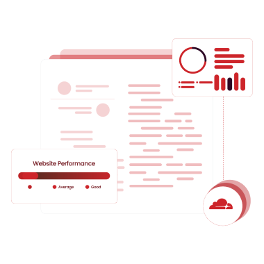

Redefine Operational Excellence with Comprehensive Cloud Automation Services
This streamlines your operations by automating repetitive tasks. We utilize advanced technologies to reduce manual errors, cut costs, and boost productivity. Our solutions ensure that your workflows are optimized, allowing your team to focus on strategic priorities.

Focuses on defining and implementing operational procedures to optimize IT services within the cloud. Combining DevOps principles with traditional IT operations, CloudOps ensures that cloud-based architectures are managed efficiently and effectively, enhancing overall performance and reliability.